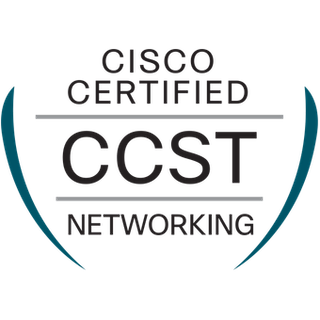
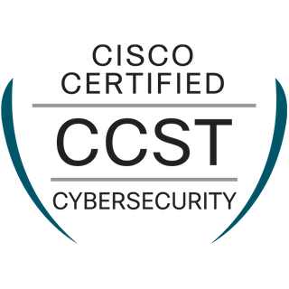
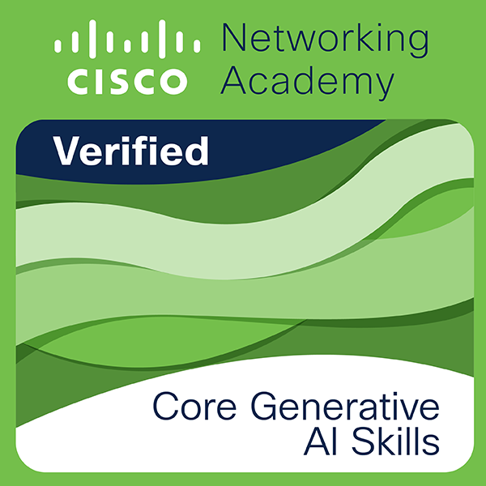
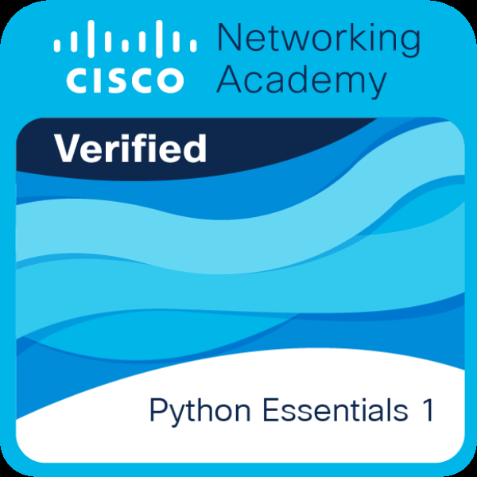
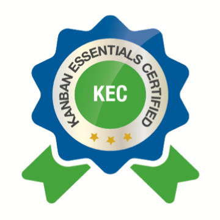
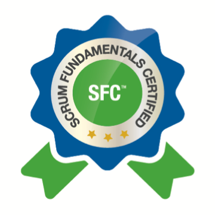
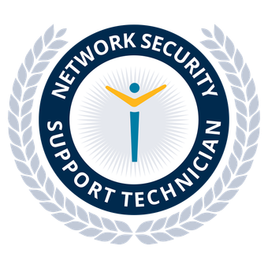
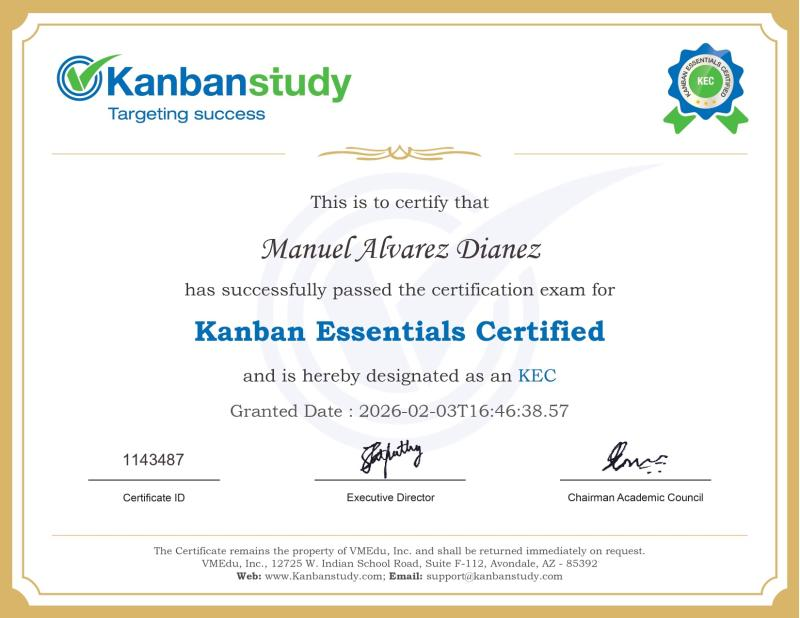

Manuel Álvarez Diánez
Técnico IT especializado en soporte técnico presencial y remoto, despliegue de infraestructuras de red, administración de sistemas Windows y Linux, mantenimiento de hardware y optimización operativa. Con perfil autónomo en constante evolución: creador y mantenedor de más de 35 aplicaciones y utilidades interactivas integrando agentes de Inteligencia Artificial para simplificar flujos de trabajo.
Titulación Oficial & Certificaciones
Acreditaciones Técnicas Oficiales VerificadasFormación reglada integral centrada en el diagnóstico y reparación de hardware, montaje de puestos de trabajo, despliegue y mantenimiento de redes locales (cableadas e inalámbricas), administración de sistemas operativos monousuario y multiusuario (Windows Server / Linux), servicios de red, seguridad informática y asistencia técnica a usuarios.








Experiencia Profesional en Informática & Sistemas
Trayectoria Técnica, Helpdesk y Redes- Soporte técnico directo a usuarios y resolución de incidencias de hardware, software y conectividad de red local (LAN/Wi-Fi).
- Instalación, configuración y puesta a punto de puestos de trabajo, periféricos y sistemas operativos cliente (Windows y Linux).
- Diagnóstico preventivo y correctivo de averías en equipos informáticos, sustitución de componentes y optimización de rendimiento.
- Mantenimiento básico de infraestructuras de red de área local, cableado estructurado y gestión de direccionamiento IP.
- Documentación de procedimientos operativos, soporte en copias de seguridad periódicas y registro en plataformas de ticketing.
- Atención y triaje de incidencias de primer nivel (Helpdesk) resolviendo dudas y problemas técnicos a usuarios corporativos.
- Configuración de cuentas de correo, asignación de permisos básicos y asistencia en utilidades ofimáticas corporativas.
- Colaboración en la monitorización de servicios de red y actualización del inventario de activos tecnológicos y software.
- Preparación y clonado de imágenes de sistemas operativos para el despliegue estandarizado de nuevos puestos de trabajo.
- Apoyo en el cumplimiento de directivas de seguridad básicas y buenas prácticas informáticas en la oficina.
Desarrollo de Software & Soluciones de Inteligencia Artificial
Perfil Constructor: +35 Aplicaciones y Herramientas Web DesplegadasMás allá de la administración de sistemas y el soporte técnico, desarrollo de forma autónoma aplicaciones web modernas, microservicios y herramientas potenciadas por Inteligencia Artificial. Cuento con una infraestructura privada en red VPN Tailscale y Docker con más de 35 aplicaciones funcionales en producción para automatización, productividad y experimentación con modelos de lenguaje locales.
Dashboard centralizado de operaciones y catálogo de servicios que supervisa en tiempo real las 35+ aplicaciones web del sistema, con telemetría de red, supervisión de procesos PM2, audio procedural y Canvas 2D.
Asistente conversacional interactivo con orbe 3D reactivo, síntesis y reconocimiento de voz, visión artificial y fallback multi-LLM (Groq, Ollama local con modelos Qwen/DeepSeek y Gemini) para consultas privadas.
Conjunto de aplicaciones prácticas orientadas a procesos reales: SCADA web industrial (IndustrialPro), ERP de gestión comercial, utilidades OCR para digitalización de documentos y generadores reactivos.
Trayectoria Logística e Industrial Previa
Experiencia de Alta Exigencia en Plantas MultinacionalesSólida trayectoria previa en entornos de alta exigencia operativa y producción continua en compañías multinacionales de primer nivel como Procter & Gamble (P&G), Becton Dickinson, Döhler, GB Foods y Logista. Experiencia que consolida mi rigor profesional, capacidad de trabajo bajo presión, máxima disciplina en normativas de seguridad laboral (normativa UNE 58451) y mentalidad de mejora continua orientada a la calidad (Six Sigma).